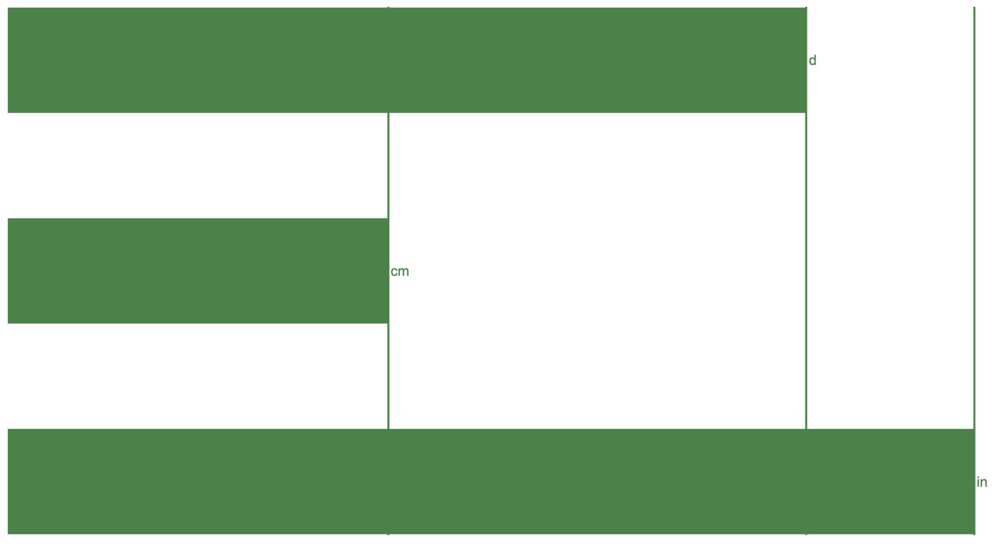
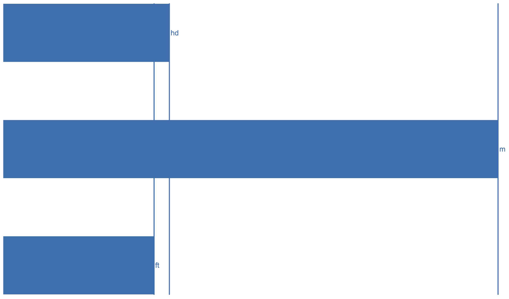
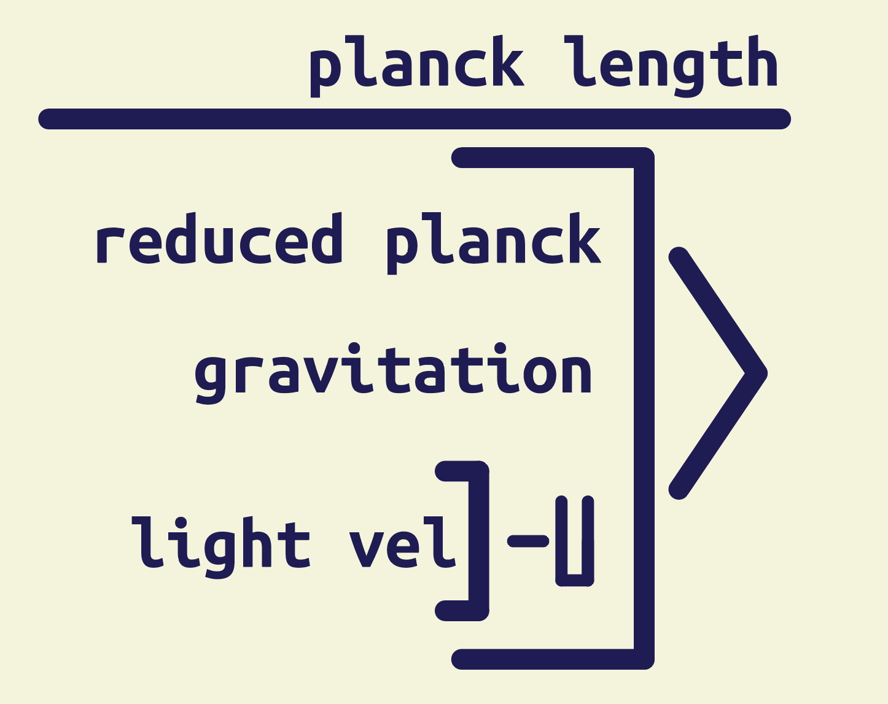
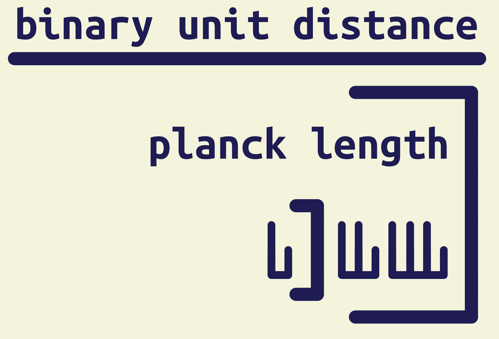
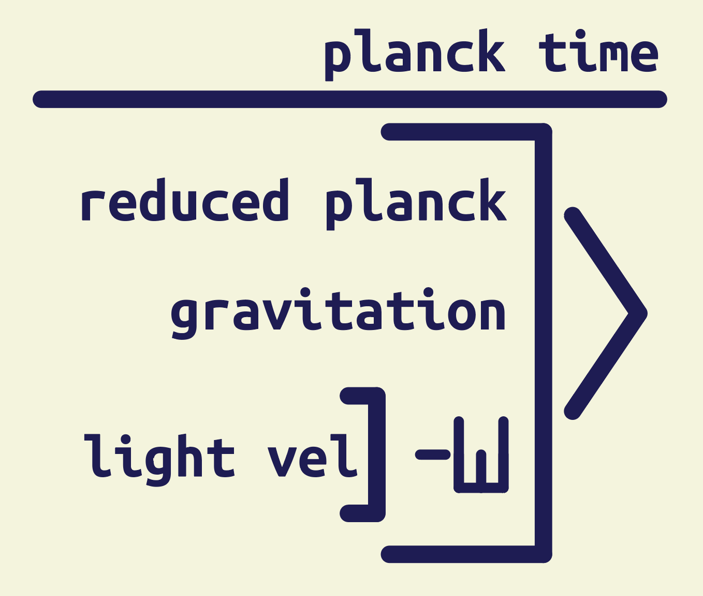
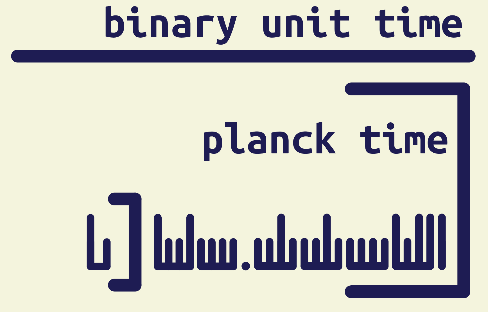

length:
the distance system ends up being a nice in-between for metric and imperial
1d

1hd = 24d

1zd = 216d
![[IMAGE] a comparison between a mile, a kilo-meter, and a zd](images/zd.png)


This system defines its base units in terms of the planck units which is a (as far as we currently know) fundamental system of units
the time system is defined in such a way as to have it line up with a day such that 1zt (or 216t) is equivalent to 1day


the distance system ends up being a nice in-between for metric and imperial
1d

1hd = 24d

1zd = 216d

